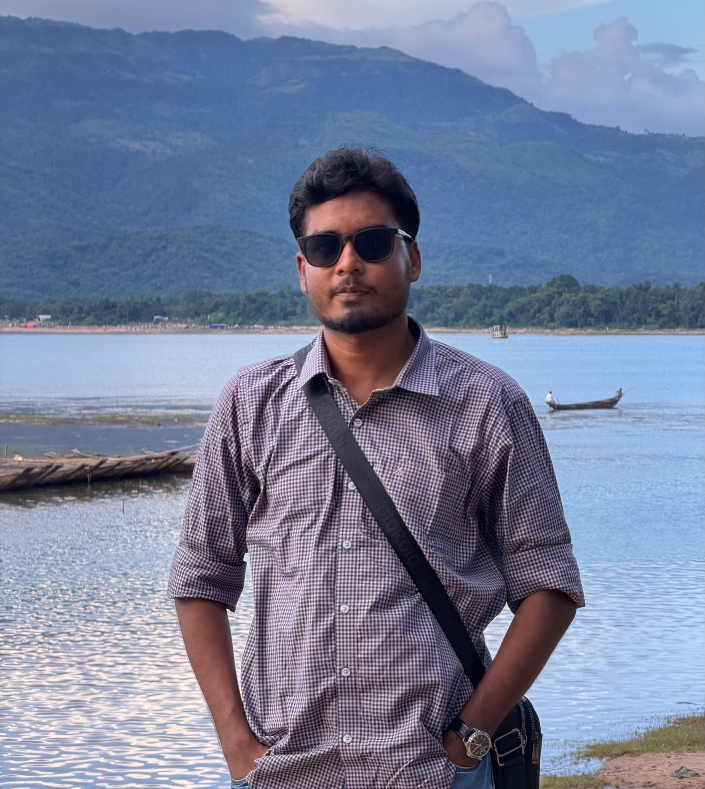

About
A student who loves turning ideas into dynamic experiences every day.
“Code. Connect. Create.”

Profile
Name: Sabbir Hossain
Degree: BSc in Electrical & Electronic Engineering
University: Chittagong University of Engineering & Technology, Chattogram
Location: Raozan || Chattogram, Bangladesh
Blood Group: B+
Passionate about electronics, power systems, DSP, programming, and automation, aiming to build a successful career developing innovative and practical engineering solutions..
To build a career in Electrical and Electronic Engineering by applying my technical knowledge, problem-solving skills, and passion for electronics, automation, and power systems to develop practical and innovative solutions..
And who knows? After our next project together, a Spider-Man movie might be the perfect celebration!
Right now I’m focused on
- Developing skills in Electrical design ,programming,Matlab
- Currently focusing on research-oriented work
- Improving performance, accessibility, and usability of applications
What I want to build next
- Research-driven full-stack projects that connect real-world data with clean, meaningful interfaces
- Practical tools and dashboards that solve simple but impactful everyday problems
- Open-source contributions where I can learn, experiment, and grow as an Engineer
Outside of Engineering
Beyond engineering, I enjoy traveling and exploring different places in Bangladesh and abroad. I love discovering new cultures, experiencing different environments, photography, and learning from every journey.